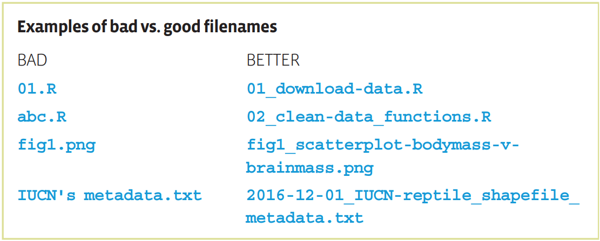
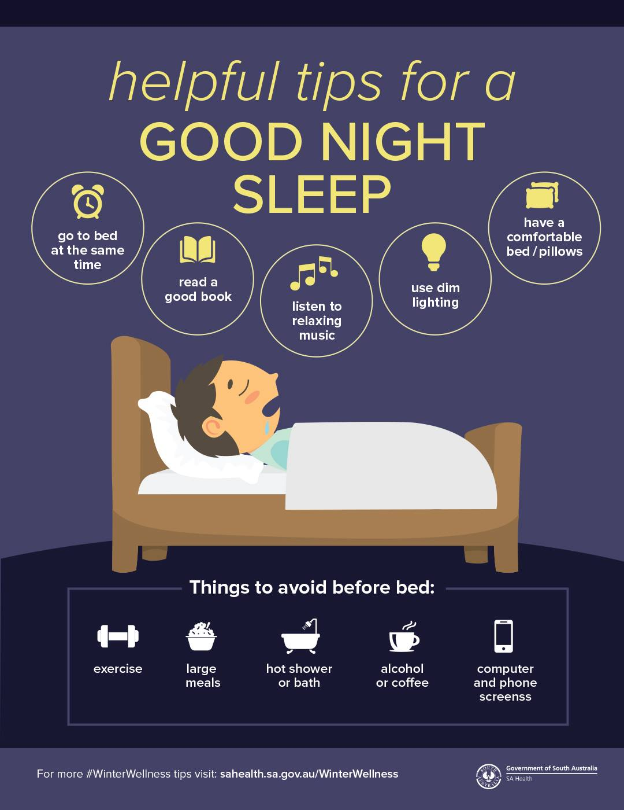
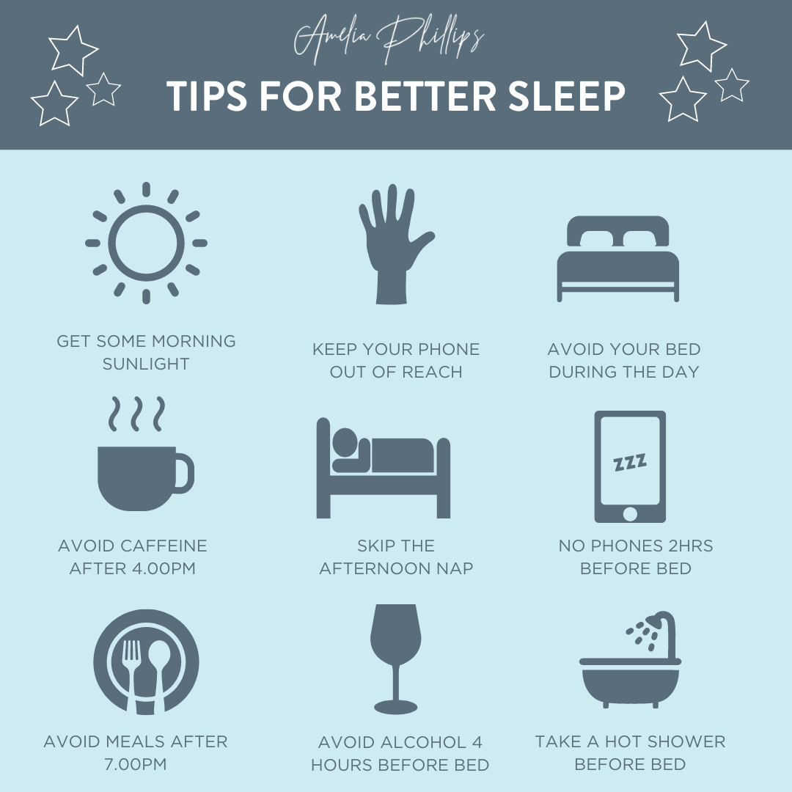
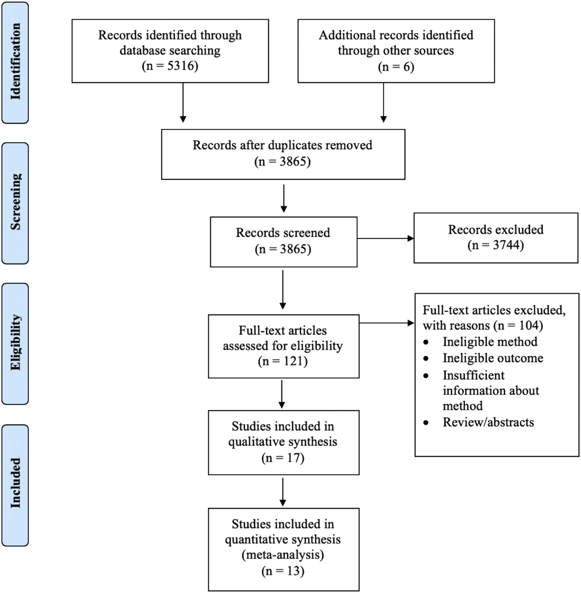
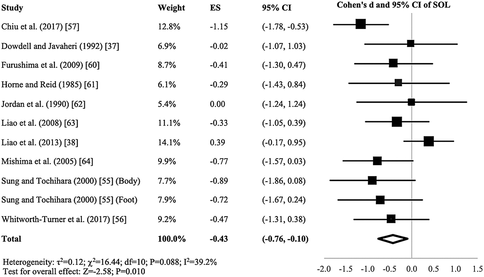
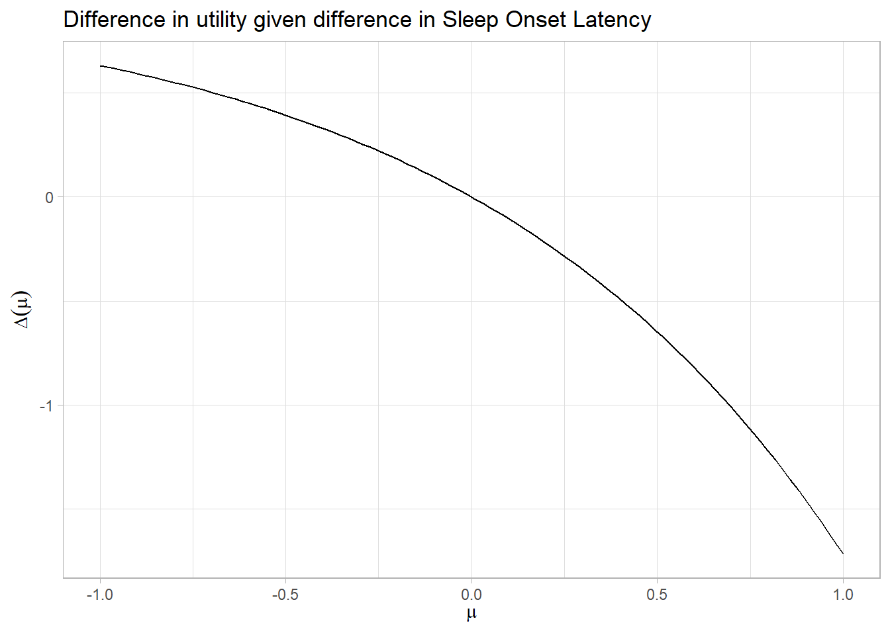
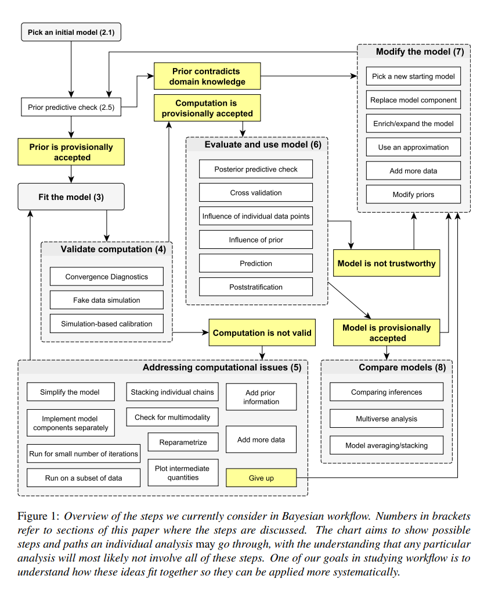

Ullrika Sahlin: Creating a reproducible workflow from data to decision in quarto
Quarto quarto.org is an accessible and versatile platform for literate programming, allowing users to seamlessly integrate code, data analysis, results, and explanatory text into fully reproducible documents.
I use Quarto for developing teaching materials, disseminating scientific findings, and creating websites for academic meetings.
In this session, I will demonstrate how to establish a reproducible workflow in Quarto using a pedagogical example of Bayesian hierarchical modelling.
The session will culminate in generating a report and publishing it to Git for transparent and shareable communication.
Outline
Reproducible workflows
A common decision problem
Solving the decision problem
Quarto and git
Reproducible workflows
Reproducibility
The Turing Way(n.d.) defines reproducibility in data research as data and code being available to fully rerun the analysis.
Reproducible
The Turing Way define reproducible research as work that can be independently recreated from the same data and the same code that the original team used.
Reproducible is distinct from replicable, robust and generalisable.
Open research
Open Data
Open Source Software
Open Hardware
Open Access
Open Notebooks
Code documentation and quality
Some documentation is better than no documentation
Don’t comment bad code — rewrite it!
Use library functions whenever feasible
Use informative and consistent naming
Example from the British Ecology Society Guide to Reproducible Code in Ecology and Evolution (Croucher et al. 2017)

Version control
Version control is a systematic approach to record changes made in a file, or set of files, over time.
This allows you and your collaborators to track the history, see what changed, and recall specific versions later when needed.
To get started, please make sure that your have Git installed on your computer. Instructions for installing Git on Linux, Windows and Mac machines are available here.
Development vs finalised product
Git during development stage
Zenodo for long term archiving and citability
Decision problem
Should I shower before bedtime to help me fall asleep?


Spoiler
Yes! To help you fall asleep faster or improve sleep quality you should shower before bed
Aim for 1-2 hours before bed
Use warm, not hot, water
Keep it to 10 minutes
A Systematic Review and Meta-Analysis
Haghayegh et al. (2019) performed a Systematic Review and Meta-Analysis asking if Before-bedtime passive body heating by warm shower or bath to improve sleep.
Literature search

Fig. 1. Flow diagram describing the search strategy of the different databases. (from Haghayegh et al. 2019)
Meta-analysis
Effect size is measured as the mean difference between the baseline and treatment nights divided by the pooled standard deviation.
 Fig. 2. Forest plot of standardized mean difference (Cohen’s d) between treatment and baseline nights of sleep onset latency (SOL). Results are shown as effect size (ES) and 95% confidence interval (CI). Size of the individual symbol markers is indicative of the weight of the respective studies. (from Haghayegh et al. 2019)
Random-effects model
A meta-analysis is a statistical analysis of multiple studies conducted in a similar way.
Let \(\mu\) be the overall effect size. This is the quantity of interest for the analysis.
Each of the eleven studies resulted in an estimate \(y_i\) and an estimation error \(se_i\), where \(i = 1,\ldots,11\).
The estimated effect size for every study is modeled as drawn from a normal distribution with the study specific effect size as the expected value and the estimation error as standard deviation
\[y_i \sim N(\theta_i,se_i)\]
Effect size for study \(i\) is modeled as drawn from a normal distribution with expected value \(\mu\) and standard deviation \(\tau\).
\[\theta_i \sim N(\mu,\tau)\]
The standard deviation \(\tau\) denotes the between-study heterogeneity.
Aim
Reproduce meta-analysis from Haghayegh et al. (2019)
Reproducibility: Same data – same analysis
Run a frequentist meta-analysis using a random effects model in the metafor package in R (Viechtbauer 2010)
Robustness: Same data – different analysis
Run a Bayesian meta-analysis using a random effects model in brms package in R (Bürkner 2017)
Integrate results into a decision analysis
Decision analysis
Should I shower or not?
Trade-off: Shower result in better sleep, but is can be problematic for the skin and consumes warm water.
Difference in utility when taking a shower compared to not taking a shower: \(\Delta(\mu) = 1-\exp(\mu)\)
library(dplyr)library(ggplot2)data.frame(mu =seq(-1,1,length.out=100)) %>%mutate(diff_utility =1-exp(mu)) %>%ggplot(aes(x=mu, y=diff_utility)) +geom_line() +labs(title="Difference in utility given difference in Sleep Onset Latency") +xlab(expression(mu)) +ylab(expression(Delta(mu))) +theme_light()

Shower if \(E_{\mu}(\Delta(\mu)) > 0\)
Quarto
Quarto quarto.org is an accessible and versatile platform for literate programming, allowing users to seamlessly integrate code, data analysis, results, and explanatory text into fully reproducible documents.
The brms package https://paulbuerkner.com/brms/ provides an interface to fit Bayesian generalized (non-)linear multivariate multilevel models using Stan, which is a C++ package for performing full Bayesian inference
A Bayesian workflow describe steps working with Bayesian modelling. An example taken from (Gelman et al. 2020)

References
Bürkner, Paul-Christian. 2017. “brms: An R Package for Bayesian Multilevel Models Using Stan.”Journal of Statistical Software 80 (1): 1–28. https://doi.org/10.18637/jss.v080.i01.
Croucher, M, L Graham, T James, A Krystalli, and F Michonneau. 2017. “A Guide to Reproducible Code in Ecology and Evolution. BES Guides to Better Science.” Editor: Natalie Cooper. British Ecological Society.
Gelman, Andrew, Aki Vehtari, Daniel Simpson, Charles C Margossian, Bob Carpenter, Yuling Yao, Lauren Kennedy, Jonah Gabry, Paul-Christian Bürkner, and Martin Modrák. 2020. “Bayesian Workflow.”arXiv Preprint arXiv:2011.01808.
Haghayegh, Shahab, Sepideh Khoshnevis, Michael H Smolensky, Kenneth R Diller, and Richard J Castriotta. 2019. “Before-Bedtime Passive Body Heating by Warm Shower or Bath to Improve Sleep: A Systematic Review and Meta-Analysis.”Sleep Medicine Reviews 46: 124–35.
Viechtbauer, Wolfgang. 2010. “Conducting Meta-Analyses in R with the metafor Package.”Journal of Statistical Software 36 (3): 1–48. https://doi.org/10.18637/jss.v036.i03.